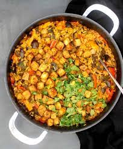

Paella

Description
This is a delicious paella, substituting the typical meat options for chickpeas
Ingredients
- one cup of white rice
- can of chickpeas
- seasoning
- diced carrot
- vegetable broth
- diced onion, diced red pepper
- peas
- Sautee onions in seasoning with salt and pepper, use lots of turmeric
- After a few minutes when the onions are browned, throw in the peppers, another few minutes, the mushrooms, and lastly, the diced tomato, seasoning while you go
- heat up the broth
- throw in the rice, toast it
- put the peas and carrots in the pan
- dumo the broth in and cook for about 15-20 minutes with the lid on